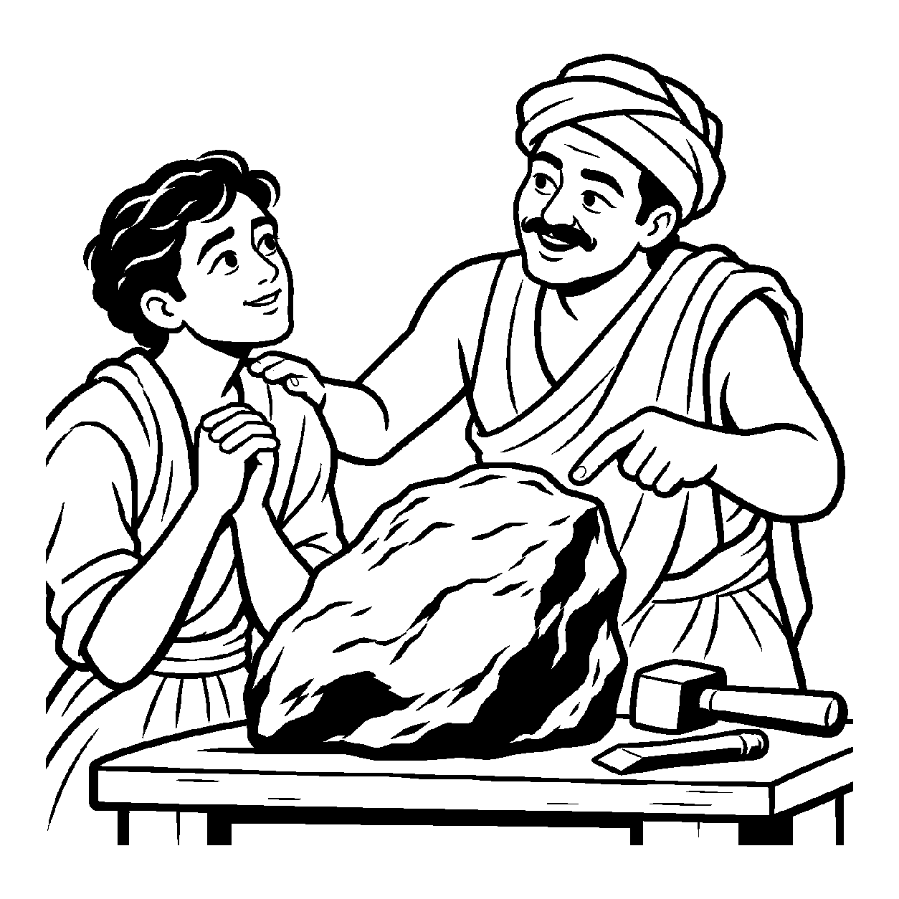

અંકુરને જોઈને માળી ભવિષ્યના વૃક્ષની સંભાવના ઓળખે છે. પરંતુ વૃક્ષ અવશ્ય ઊગશે એવી ખાતરી નથી—પાણી, માટી, હવામાન અને અન્ય નિમિત્તો પણ અસર કરે છે. સંભાવિત કાર્યને યોગ્ય સંદર્ભે ભાવીરૂપે કહેવું ભાવિનૈગમ સમજવા માટેનું રૂપક છે; ભવિષ્યને વર્તમાનમાં પૂર્ણ થયેલું માનવું તેનો અર્થ નથી.
ભવિષ્યમાં થનારા કાર્ય કે પર્યાયને વર્તમાન સંકલ્પ અથવા વ્યવહારમાં ભાવીરૂપે મુખ્ય કરવું—પરંતુ તેને આજની પૂર્ણ હકીકત તરીકે રજૂ કર્યા વિના—ભાવિનૈગમની સમજમાં આવે છે. ભાવીનું કથન યોગ્ય આધાર અને સંદર્ભ માગે છે; માત્ર ઈચ્છા કે સંકલ્પથી પરિણામ નિશ્ચિત થઈ જતું નથી.
આ દૃષ્ટિ ખાલી મનોરથમાં અટકી ન રહેવી જોઈએ. કારણ, યોગ્ય નિમિત્તો અને પુરુષાર્થ મળવાથી કોઈ કાર્યની સંભાવના સમજાય છે; પરિણામ અચૂક પહેલેથી જ કારણમાં હાજર છે એવો નિષ્કર્ષ કાઢવો નહીં. યોગ્ય આશા વર્તમાન પ્રયત્નને દિશા આપે છે, પરંતુ ભવિષ્યની અનિશ્ચિતતાને નાબૂદ કરતી નથી.
ભવિષ્યનો પર્યાય જે, હજુય છે અદૃષ્ટ;
જ્ઞાન તણા સંકલ્પથી, આ પળ ભાસે સ્પષ્ટ.
ભવિષ્યની ચિંતા કે આકાંક્ષાઓ છોડી, મુક્તિના દિવ્ય સંકલ્પને વર્તમાન સાધનામાં પુરુષાર્થરૂપે ઢાળવો.

કેશવ એક અત્યંત હતાશ અને આત્મવિશ્વાસ ગુમાવી ચૂકેલો યુવાન હતો. અનેક પરીક્ષાઓમાં નિષ્ફળતા મળ્યા પછી તેના પરિવાર અને સમાજના લોકો તેને "નકામો, જડ અને વ્યર્થ પથ્થર" કહીને ધિક્કારતા હતા. કેશવ પોતે પણ માની બેઠો હતો કે તેના અસ્તિત્વનું કોઈ ભવિષ્ય નથી. તેના મગજમાં આત્મ-તિરસ્કારના એવા કાળા ચકરાવા ઘૂમરાતા હતા કે તે જીવવાની આશા જ છોડી ચૂક્યો હતો: "મારું આખું જીવન નિરર્થક છે, હું ક્યારેય કોઈ યોગ્યતા સિદ્ધ નહીં કરી શકું." અંધકારભરી ગલીમાં ભટકતાં તેના અંતરમાંથી એક રુદનભર્યો વિવશ પોકાર ઊઠ્યો: "શું આ તિરસ્કૃત પથ્થર જેવા પરાધીન જીવનમાંથી ઉગારવાનો કોઈ રસ્તો નથી?"
તે જ ક્ષણે નગરના એક શિલ્પકારે કેશવને પોતાની કાર્યશાળામાં બોલાવ્યો અને ખરબચડો પથ્થર બતાવી પૂછ્યું, "તને આમાં શું દેખાય છે?" કેશવે નિરાશ થઈ કહ્યું, "નકામો પથ્થર." શિલ્પકારે સમજાવ્યું, "હું આ પથ્થરમાંથી પ્રતિમા કંડારવાની સંભાવના જોઈ રહ્યો છું; પ્રતિમા હજી અહીં તૈયાર નથી. તેને ઘડવા કુશળતા, સાધનો અને સમય જોઈએ." પછી તેણે કેશવને કહ્યું, "તારી આજની નિષ્ફળતા તારી આખી ઓળખ નથી. અભ્યાસ અને યોગ્ય મદદથી તું આગળ વધી શકે છે; પરિણામ માટે પ્રયત્ન જરૂરી રહેશે." કેશવે પોતાની ક્ષમતાને સંભાવના તરીકે જોવાનું શીખ્યું, ખાતરી થયેલા ભવિષ્ય તરીકે નહીં. તેની હતાશા ઓછી થઈ અને તેણે ફરી પ્રયત્ન કરવાનો નિર્ણય કર્યો.
જો આ નય જીદ કે કદાગ્રહ બને, તો મનુષ્ય વર્તમાનના વાસ્તવિક પુરુષાર્થને છોડીને કેવળ હવામાં કિલ્લા બાંધતો થઈ જાય છે. "હું તો ભવિષ્યમાં મોટો મહાપુરુષ કે મુક્ત આત્મા થઈ જઈશ" એવા આળસુ અહંકારમાં તે આજના સાધન અને સદાચારની ઘોર ઉપેક્ષા કરે છે. પરિણામે સ્વપ્નશીલતા, પ્રમાદ અને જીવનમાં ક્યારેય સિદ્ધ ન થનારી સંકુચિતતા જન્મે છે.
આ નય-દ્રષ્ટિ ભવ્ય મુમુક્ષુ જીવમાં રહેલી ભાવિ મુક્તિની શક્યતાને આશ્રય આપે છે; તેને દરેક જીવ માટે અચૂક પરિણામ ન માનવું. તે સાધકને સંસારના ક્ષણિક પતન સામે ન જોતાં ભાવી નિર્વાણના લક્ષ્ય તરફ અડગ રાખી સાધ્ય તરફ સરકાવે છે. અહીં ભવિષ્યનું સ્વપ્ન પ્રમાદ નથી બનતું, પણ વર્તમાન પુરુષાર્થનું પરમ પાવક બળ બનીને જીવનને મહોત્સવ બનાવી દે છે.